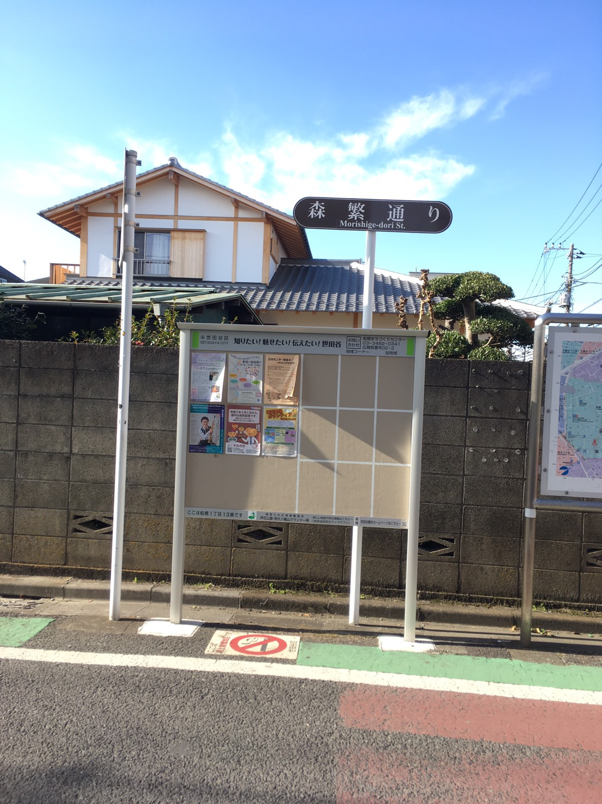
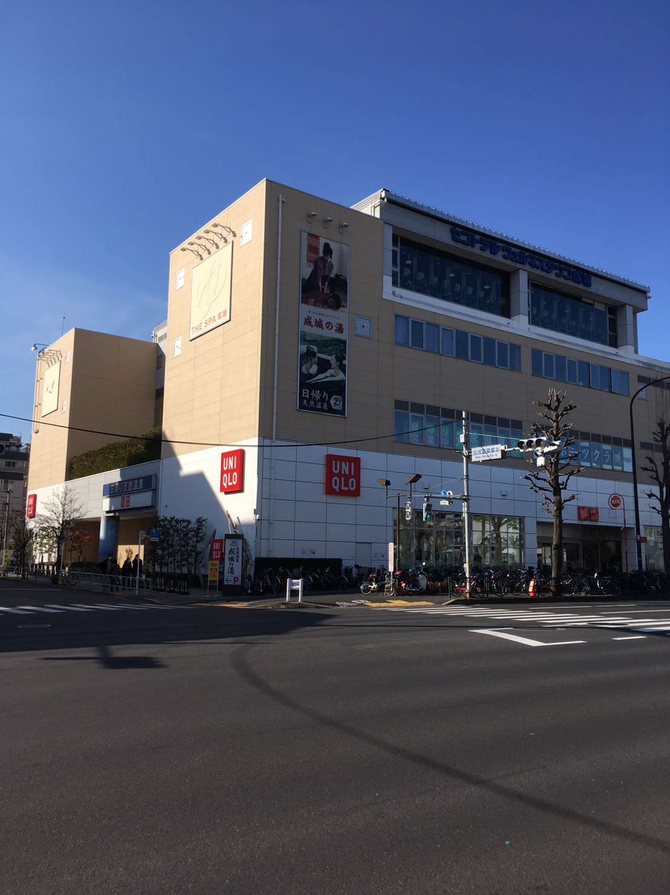
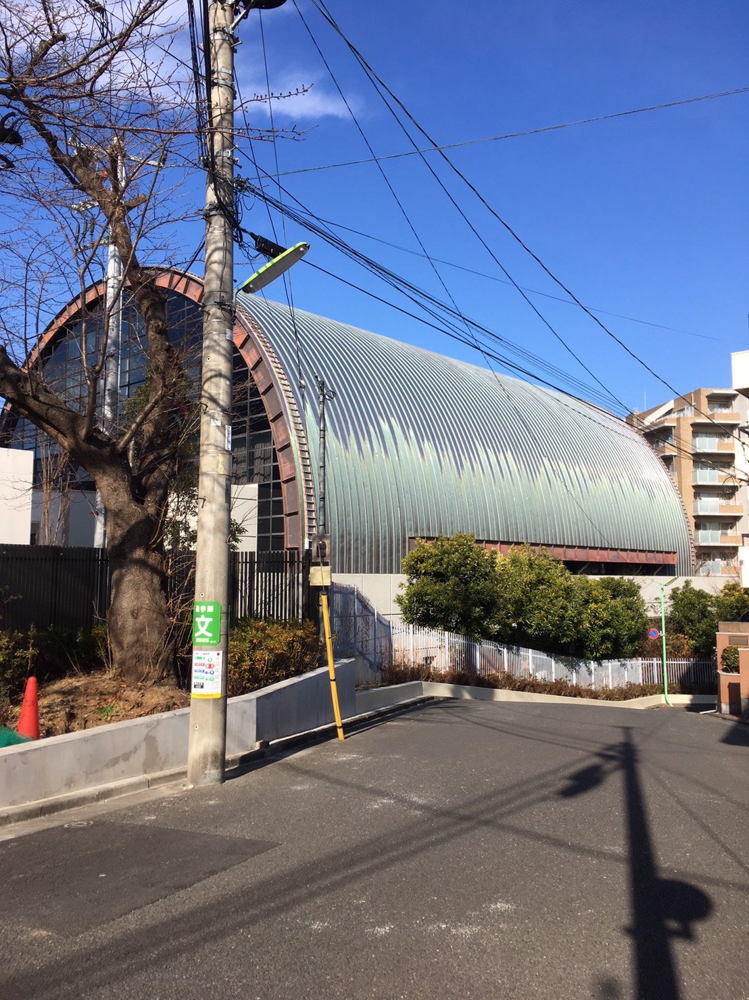

千歳船橋
| 愛称 | ちとふな |
|---|---|
| 有名人・著名人 | 森繫久彌 |
| 周辺施設 | 森繫通り 成城の湯 東京都立千歳丘高等学校 |
| 愛称 | ちとふな |
|---|---|
| 有名人・著名人 | 森繫久彌 |
| 周辺施設 | 森繫通り 成城の湯 東京都立千歳丘高等学校 |

ちとふなのシンボル、森繫通り。
森繁通りは、小田急線千歳船橋駅の北口の商店街の中にある。この通りの先に俳優の森繁久弥の自宅があった事から誰言うと無く名付けられたようである。
この通りのお寿司屋さんには森繁から贈られた色紙の看板が出ている。

フィットネスクラブ併設の温泉施設です。フィットネスがメインなのか規模はコンパクトな感じ。温泉は濃ゆい黒湯が堪能でき、露天は空が見えるだけの閉塞的な空間ですが、掛け流しのつぼ湯がある。
千歳船橋駅から徒歩15分/無料シャトルバスで5分

通称ガオカ。自宅から一番近い学校である。
2019年より新校舎になった。体育館が特徴的で格納庫のようなアーチ型で珍しい形である。
千歳船橋駅から徒歩7分